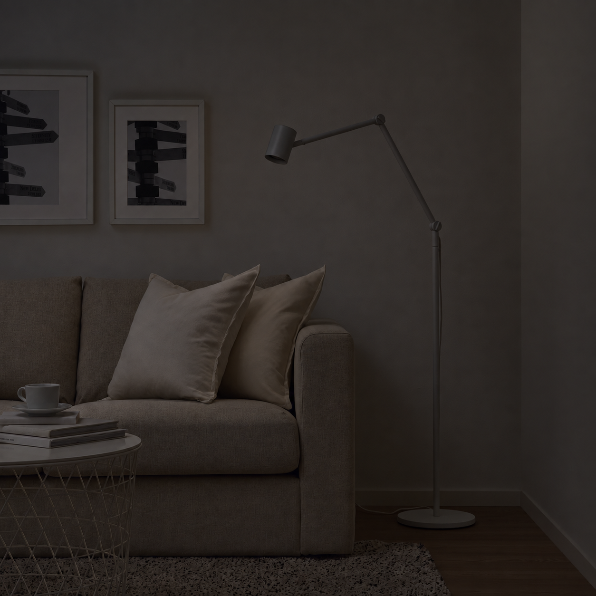

商品与素材
关联商品身份、真实场景图与展示入口。
AI Workflow · AIGC · Human-in-the-loop
面向商品列表页，将灯具场景生成、人工审核与交互展示串联为可复用流程。

01 · CONTEXT
线上白底图能够清楚展示商品，却难以传达灯具在真实空间中的照明效果。 历史实验信息显示，落地灯场景图在加购与转化上呈正向趋势。 团队因此希望用轻量 Demo 验证：白底图与场景图对比、日夜切换和开关灯体验， 能否让用户更直观地理解同一灯具的氛围差异。
02 · ROLE
我将商品体验和内容生产拆成两个层次：交互 Demo 验证用户最终看到什么； Pipeline 解决素材如何被生成、检查、重做、归档并进入展示。 我定义流程、质量判断与异常规则，并借助 Codex 辅助完成本地代码、候选图和自动化实现。
03 · PIPELINE
批量试验暴露出场景漂移、光效同质化和跨状态错位。解决问题不能只靠继续修改 Prompt， 而需要重新定义输入关系、生成顺序、审核粒度和发布闸门。
关联商品身份、真实场景图与展示入口。
先锁定夜景，再恢复目标灯具的真实光效。
分别定位场景问题与灯光问题。
按生成依赖只重做必要的状态。
审核通过才汇总并进入交互 Demo。
04 · KEY JUDGMENTS
Night Off 负责锁定夜间场景，Day On 只提供真实光照落点、范围与阴影， 避免白天曝光和场景细节污染最终结果。
AI 负责候选内容，人负责商品真实性和发布决定； 单个商品问题先局部修正，跨商品反复出现后再升级为全局规则。
真正可复用的是商品、素材、审核状态与展示目录之间的结构化关系， 而不是某一个静态页面。
在增量测试暴露裁切、价格和发布风险后，最终主动回到更稳定的 16 款版本对外交付。
05 · OUTCOME
第一阶段在一周内完成 8 款可交互 Demo；随后以代表性商品验证最小生成与审核闭环， 扩展并交付 16 款经审核的自包含版本。真实新增商品测试证明， 新商品可以继续复用同一套生成、审核与发布链路，而无需从零搭建流程。